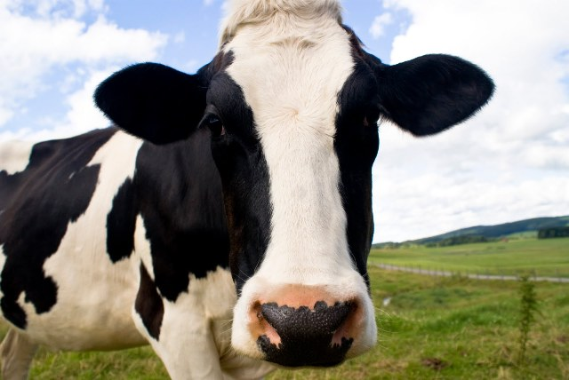

vaca leiteira, bacurau
vaca pintada
romulo fazendeiro
link-1
lin-2
youtube
vaca de Romulo

vaca de Romulo, peço que por favor o senhor sempre alimente ela
ela é linda
ela é a vaca de Romulo, o raparigueiro
Ela faz MUUUUUUUUUU!, e é bacurauuuu!, e dale 15!